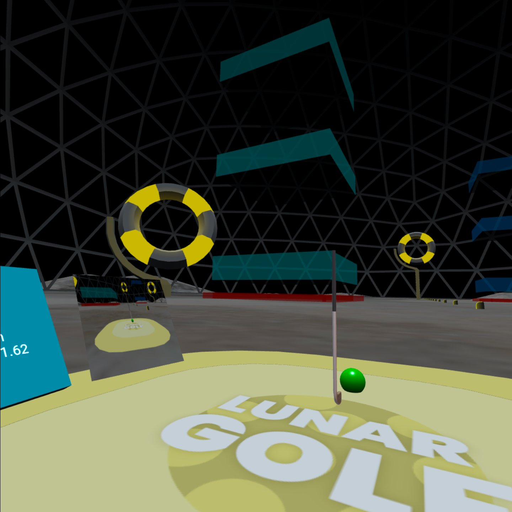
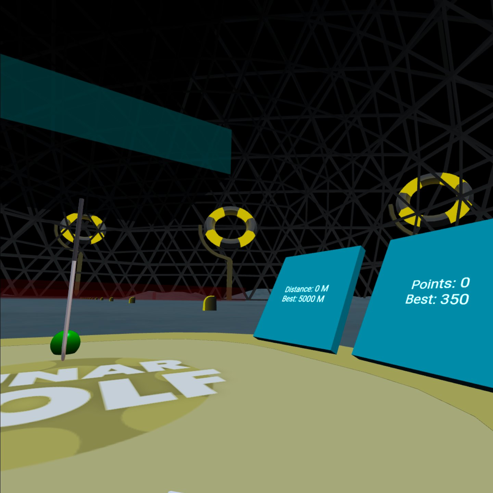

Lunar Golf VR
What is it?
Lunar Golf VR was the final project for my Virtual Reality class during the Fall 2022 semester at UNCG. Our group worked on and off on the project over a period of 2-3 weeks. The assignment was to create an interactive Virtual Reality experience incorporating the principles of VR we learned in the class and a novel interaction technique. Our group decided to create a virtual driving range on the moon (or just space in general).
Our novel interaction technique was the act of swinging the golf club to hit the ball. You can hit for distance or for points by aiming for various targets. What sets our game apart from a normal golf game are the effects of low gravity on the golf experience. There are a few different planets available to play on, all with their own unique gravity and target layouts.
How?
This project was created in a engine called BabylonJS. It is a JavaScript/TypeScript based game engine that runs in the web browser. We used it for the class due to its ability to have web-based apps that could run easily on the Meta Quest 2. Though quite honestly, it is not the easiest engine to work with and we had quite a bit of trouble, but we tried to make the most of it.
My group consisted of myself, Wyatt Hackley and Kadir Lofca and we all had our individual roles. Wyatt and I oversaw programming while Kadir made all the assets. Some specific things I implemented are the ball camera, the different planets/gravities, the target system and even making the background music. During development, we had a lot of issues with Babylon and there was a long period of trial and error to get things working the way we wanted it to. In the end, we ran out of time leaving the final version with a few glaring issues. The physics of hitting the ball being very inconsistent, the performance leaves a lot to be desired and we are lacking some much needed polish. However, I’m still happy with how it turned out given our inexperince with VR development and limited time frame.
Status
The GitHub repository is private and managed through GitHub Classroom, so I cannot make it available here. Luckily. BabylonJS programs are made to be hosted online. So I have created a Vercel project that is hosting the game if you would like to try it. You will need a VR headset to run the game (or at least play in the intended way). If you are using a PC headset, make sure it is connected to your PC, open the site and the VR button should appear in the bottom right. Though it should function with any headset, it's only been tested on a Meta Quest 2. If you are on a standalone headset (i.e. Meta Quest 2), you can open your headset’s browser and go the site URL directly. From there, click the VR button on the bottom right corner and to enter immersive mode. Enjoy!
Images
 